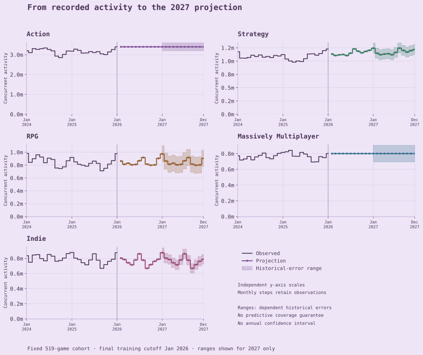

Hello and welcome! I’ve been looking through five years of Steam activity to see where it might head next. Here’s my best guess for 2027.
Action leads this cohort’s 2027 projection.
Action stays in front under both approaches, mostly because it starts so far ahead. Indie and MMO swap places depending on the approach, but they are very close. Shall we take a closer look?
Selected models · projected annual means. Categories overlap. Scroll within the chart on narrow screens, or open full size.
Here’s the model behind each category’s 2027 forecast. Annual means are rounded to three significant figures.
Category
Selected model
2027 annual mean
Loading the models behind these forecasts…
Curious how this comparison was made?
For each annual mean, I take the average of the twelve monthly forecasts for 2027 under the selected models. You can also try the last-value reference in Forecasts: January 2026 activity carried forward.
Annual mean concurrent activity Millions · one shared linear scale
Selected models · projected annual means for 2027. Categories overlap.
Action · Selected models3.40M annual mean concurrent activityModel: Last value
MONTHLY FORECAST / INDIE
Indie · Selected models · Seasonal naive · solid line
Average concurrent activity · millions
Reading this chart
Use the slider, previous/next buttons, or focus the chart and press arrow keys, Home or End. Tap a month to select it. Lines connect all 23 monthly values without smoothing. Annual means remain unchanged.
View numerical values & sources
Tables show every digit; chart labels are rounded to keep things readable. Alternative approaches are not probabilistic scenarios. Scroll tables horizontally if needed.
2027 annual means for the approach you picked (average concurrent activity).
Rank
Category
Approach
Model
Annual mean
All 23 monthly forecasts for the category you picked (average concurrent activity).
519 games · January 2026 cutoff · February 2026–December 2027 · five overlapping categories. Projected concurrent activity for this fixed cohort.
OBSERVED HISTORY / FORECAST CONTEXT
From history to the horizon
JAN 2026 CUTOFF
Every future has a past. Come see what these games have been up to!
RECORDED ACTIVITY / ACTION
Average concurrent activity · millions
ObservedProjectionHistorical error range · 2027 only
Each category's scale starts at zero. Use it to compare dates within that category; the scales differ between categories.
Pick a month with the slider, arrow buttons, or chart. Use the arrow keys to move one month, or Home and End to jump to either end.
Action · January 2026
Average concurrent activity
Reading the continuation and ranges
The continuation uses the selected models. January 2026 is the last observed month; February 2026–December 2027 values are forecasts.
Historical error ranges are available for 2027 only. They describe past errors that overlap in time. I have not checked how often these ranges would contain future values, and they are not a promise about future results or an error range for yearly averages. Missing ranges are left unavailable.
Direct copies of recorded activity, selected-model projections, and range endpoints. Displayed values are rounded to two decimals; the download retains every digit.
519-game fixed cohort · five overlapping categories · not the whole Steam market.
Loading history values…
View the comparison figuresRECORDED ACTIVITY → PROJECTIONSFull size ↗

Restyled figure · each panel has its own scale · I have not checked how often these past-error ranges would contain future values. Scroll horizontally on narrow screens or open full size.
MODEL RECORDS / HISTORICAL EVALUATION
Compare the forecasting models
I compared six models: last value, seasonal naive, SES, damped trend, damped seasonal and gradient boosting. The two development folds start in January and February 2024 and overlap; this comparison looks at forecasts 12–23 months ahead. The recorded choices looked at how the models scored in both folds and, in a couple of categories, at stability across cutoffs and underprediction.
Category
WHY THIS MODEL?
Selected model · Last value
Damped trend’s average MAE was only marginally lower. Its advantage over last value did not hold in both folds, so the selected model remains last value.
Show the evidence
Diagnostic candidate: Damped trend. This differs from the selected model. These records cover forecasts 12–23 months ahead. MAE is in average concurrent activity units, rounded here to whole units.
January 2024 origin
Candidate MAE
83,959
Last-value MAE
84,087
Compared with last value
0.15% lower MAE
Candidate rank by MAE
1
February 2024 origin
Candidate MAE
90,865
Last-value MAE
90,797
Compared with last value
0.07% higher MAE
Candidate rank by MAE
3
The recorded decision also flags cutoff sensitivity. Keeping last value does not remove that sensitivity.
Sources: leader_fold_stability.csv, frozen_policy.json, cutoff_sensitivity.csv. You’ll find the full paths and values in the evidence download below.
WHY THIS MODEL?
Selected model · Damped seasonal
Damped seasonal had the lowest MAE in both development folds. Its improvement over the last-value reference held across both origins.
Show the evidence
Diagnostic candidate: Damped seasonal. This is the selected model. These records cover forecasts 12–23 months ahead. MAE is in average concurrent activity units, rounded here to whole units.
January 2024 origin
Candidate MAE
57,004
Last-value MAE
103,705
Compared with last value
45.03% lower MAE
Candidate rank by MAE
1
February 2024 origin
Candidate MAE
44,319
Last-value MAE
74,008
Compared with last value
40.12% lower MAE
Candidate rank by MAE
1
Both folds support the seasonal choice, but they overlap and do not establish independent test performance.
Sources: leader_fold_stability.csv, frozen_policy.json. You’ll find the full paths and values in the evidence download below.
WHY THIS MODEL?
Selected model · Damped seasonal
Damped seasonal had the lowest MAE in both folds. Its advantage over last value was much larger in one fold than the other.
Show the evidence
Diagnostic candidate: Damped seasonal. This is the selected model. These records cover forecasts 12–23 months ahead. MAE is in average concurrent activity units, rounded here to whole units.
January 2024 origin
Candidate MAE
51,435
Last-value MAE
163,106
Compared with last value
68.47% lower MAE
Candidate rank by MAE
1
February 2024 origin
Candidate MAE
48,574
Last-value MAE
50,146
Compared with last value
3.13% lower MAE
Candidate rank by MAE
1
The direction of the improvement was consistent; its size was not. That difference stays visible in the fold evidence.
Sources: leader_fold_stability.csv, frozen_policy.json. You’ll find the full paths and values in the evidence download below.
WHY THIS MODEL?
Selected model · Last value
Damped seasonal’s small average-error advantage hid a reversal between the folds and repeated underprediction. The selected model remains last value.
Show the evidence
Diagnostic candidate: Damped seasonal. This differs from the selected model. These records cover forecasts 12–23 months ahead. MAE is in average concurrent activity units, rounded here to whole units.
January 2024 origin
Candidate MAE
46,796
Last-value MAE
36,774
Compared with last value
27.25% higher MAE
Candidate rank by MAE
4
February 2024 origin
Candidate MAE
51,641
Last-value MAE
62,256
Compared with last value
17.05% lower MAE
Candidate rank by MAE
1
Damped seasonal underpredicted 23 of the 24 long-horizon forecast cases. Those cases overlap in time; they are not independent trials.
Sources: leader_fold_stability.csv, frozen_policy.json, leader_bias.csv. You’ll find the full paths and values in the evidence download below.
WHY THIS MODEL?
Selected model · Seasonal naive
Seasonal naive lowered MAE against the last-value reference in both folds. The selected model keeps that seasonal reference.
Show the evidence
Diagnostic candidate: Seasonal naive. This is the selected model. These records cover forecasts 12–23 months ahead. MAE is in average concurrent activity units, rounded here to whole units.
January 2024 origin
Candidate MAE
30,770
Last-value MAE
73,794
Compared with last value
58.30% lower MAE
Candidate rank by MAE
1
February 2024 origin
Candidate MAE
35,048
Last-value MAE
49,500
Compared with last value
29.20% lower MAE
Candidate rank by MAE
2
It was not the lowest-error model in every fold. The selection reflects the diagnostic judgment, not a claim of universal superiority.
Sources: leader_fold_stability.csv, frozen_policy.json. You’ll find the full paths and values in the evidence download below.
Action LONG-HORIZON COMPARISON
Model scores for forecasts 12 to 23 months ahead; MAE in average concurrent activity units and WAPE as a percentage
Model
MAE ↓
WAPE ↓
Damped trend
87,412
2.77%
SES
87,442
2.77%
Last valueSELECTED
87,442
2.77%
Gradient boosting
91,582
2.90%
Seasonal naive
121,797
3.86%
Damped seasonal
184,233
5.84%
Damped seasonalSELECTED
50,661
4.70%
Seasonal naive
60,720
5.63%
Gradient boosting
63,404
5.87%
SES
78,248
7.25%
Last value
88,857
8.24%
Damped trend
97,562
9.04%
Damped seasonalSELECTED
50,005
6.09%
Gradient boosting
74,640
9.10%
Seasonal naive
101,761
12.40%
Damped trend
106,517
13.00%
SES
106,626
13.01%
Last value
106,626
13.01%
Damped seasonal
49,219
6.37%
SES
49,515
6.41%
Last valueSELECTED
49,515
6.41%
Damped trend
49,525
6.41%
Gradient boosting
83,704
10.83%
Seasonal naive
86,951
11.25%
Seasonal naiveSELECTED
32,909
4.26%
Gradient boosting
35,364
4.58%
Damped trend
61,607
7.97%
SES
61,647
7.98%
Last value
61,647
7.98%
Damped seasonal
75,549
9.77%
Look for SELECTED to find the selected model. In some categories the choice also weighed stability and bias, not just the lowest aggregate MAE.
What do these measurements mean?
Average concurrent activity
The average number of players active at the same time during a month, added across the games in a category.
Months ahead
How far past the cutoff a forecast month sits. The 2027 months are 12 to 23 months ahead of the January 2026 cutoff.
Last value
Take the latest number we have and carry it forward unchanged.
SES — simple exponential smoothing
A weighted average of past months that pays the most attention to the most recent ones.
Seasonal naive
Assume each month will look like the same month last year.
Damped trend
Follow the recent rise or fall, but let the trend fade as the forecast looks further ahead.
Damped seasonal
Exponential smoothing with a damped trend and a repeating seasonal pattern.
Gradient boosting
Uses earlier activity values, rolling averages and calendar features. As it forecasts further ahead, earlier predictions become inputs too.
Selected
The model picked for a category, marked SELECTED in the table.
MAE — mean absolute error
The average size of the misses, in average concurrent activity units. Lower is better.
WAPE — weighted absolute percentage error
Add up the absolute errors and divide by the total observed activity within each fold, then express that as a percentage. This table averages the two fold percentages.
Fold
One forecast run from a historical cutoff, checked against the observations that followed. The January and February 2024 folds overlap.
Diagnostic candidate
A model examined in the supporting checks. It may differ from the selected model.
Stability across cutoffs
How consistently a model performs when the date used to start a forecast changes.
Cutoff sensitivity
How much a result changes when the date used to start a forecast changes.
Underprediction
Forecasts below the activity actually observed.
Rank
Where a model sits when ordered by MAE within that category and fold. It is not a probability or a promise about future performance.
Bias and mean error
Error means actual minus predicted activity. A positive mean error means the model tended to underpredict; a negative mean error means it tended to overpredict. Opposite errors can cancel, so mean error differs from MAE.
Retrospective development evaluation · overlapping folds · no independent holdout. Scores average the two fold metrics.
RESEARCH NOTES / SCOPE & LIMITATIONS
How this study is built
STUDY NOTES
THE RESEARCH SEQUENCE
SourcesI used monthly activity histories from the lunthu Kaggle dataset and the Aanomali and Liu research repositories. I also used a snapshot from Aakash-1107's Game Market Intelligence project and a small SteamCharts collection. Where sources overlap, I keep one compatible value for each game and month.
CohortI kept 519 games with usable metadata and at least one selected category label. Each has an observation for every month from February 2021 through January 2026.
EvaluationI checked forecasts starting in January 2024 and February 2024. Their test months overlap, so this is a development check rather than a fresh test on untouched data.
ProjectionI used observations through January 2026 to make 23 provisional monthly forecasts, from February 2026 through December 2027.
A CLOSER LOOK
Which games and labels are included?
Each game has all 60 monthly observations in the common window. I did not fill missing observations with zero.
A game’s activity goes into every selected category attached to it. The labels come from a later metadata snapshot, so they are not a record of how labels changed over time.
Choosing games with a complete history favours the ones observed consistently. The inclusion checks do not show that this cohort represents all of Steam.
How were the models evaluated?
I checked forecasts from January 2024 and February 2024, looking 12 to 23 months ahead. All the months checked at that distance fall between January 2025 and January 2026.
The test months overlap. Both starts are near the beginning of the year, so this check does not cover starts in other seasons. I did not keep a separate set of months aside for an independent holdout. These checks helped me choose the models, so they do not prove which model will forecast best in the future.
The radius takes the worst absolute development error for each unique target month, then the 90th percentile using the “higher” rule. Lower endpoints are clipped at zero.
The test periods overlap, so these ranges are a rough guide rather than a guarantee. They do not tell us how often future values will fall inside them, and I haven’t worked out an error range for yearly averages.
Ranges are available for the selected models in January–December 2027 only.